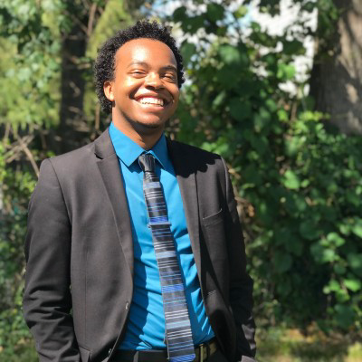
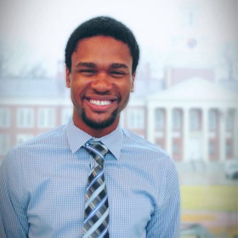
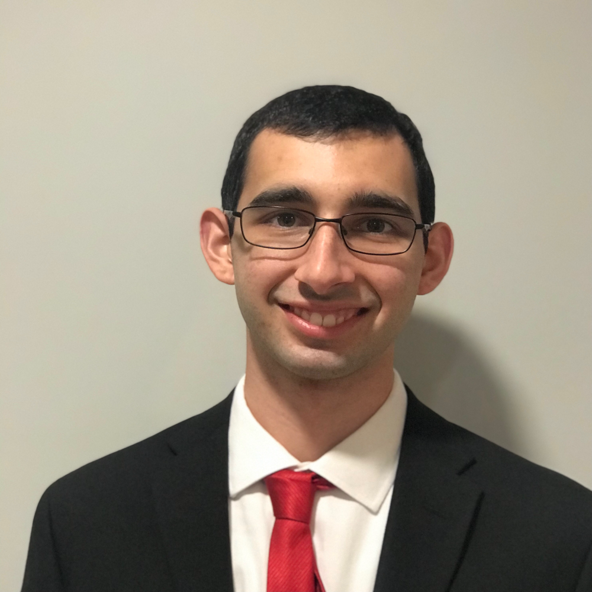
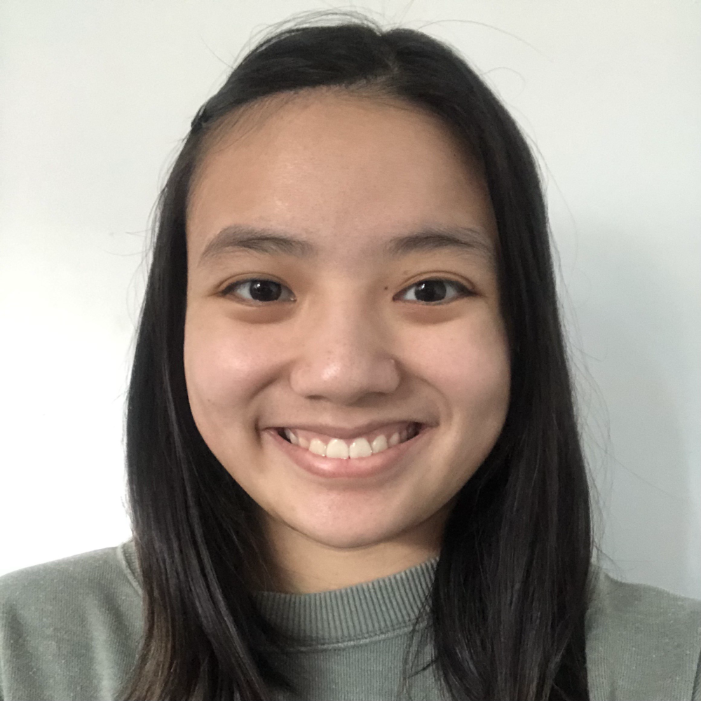
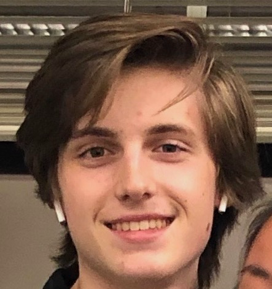
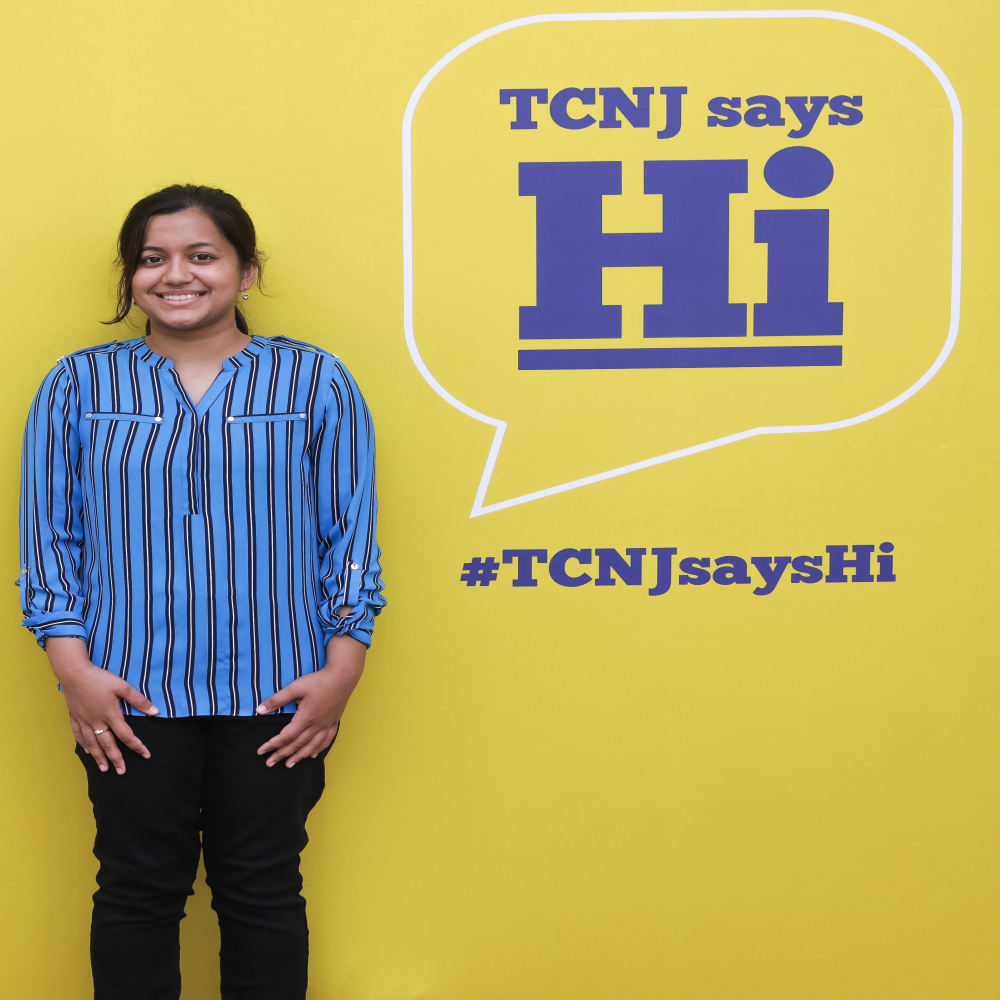
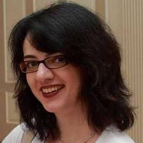

About Us
-
Kevin Williams President Computer Science Major Senior

-
Sterly Deracy Vice President Computer Science Major and Interactive Multimedia Minor Junior

-
Dom Lamastra Treasurer Computer Science Major and Computational Biology Minor Junior

-
Leah Kazenmayer Secretary Computer Science Major and Math Minor Junior

-
Payton Shaltis Outreach Co-Chair 1 Computer Science Major Junior

-
Faiza Hoque Outreach Co-Chair 2 Computer Science Major Sophomore

-
Sterly Deracy Webmaster Computer Science Major and Interactive Multimedia Minor Junior

-
Dr. Andrea Salgian Advisor Assoc. Professor of Computer Science
